용접산업기사 (2011-06-12 기출문제)
1과목: 용접야금 및 용접설비제도
1. 알루미늄의 성질을 설명한 것으로 틀린 것은?
- 비중이 가벼워 경금속에 속한다.
- 전기 및 열의 전도율이 좋다.
- 산화 피막의 보호 작용으로 내식성이 좋다.
- 염산에 아주 강하다.
(정답률: 91%)

2. 저 융점의 FeS가 결정입계에 개재하여 발생하는 취성으로 Mn을 첨가하여 이것을 방지하는 것은?
- 청열 취성
- 적열 취성
- 뜨임 취성
- 저온 취성
(정답률: 76%)
3. 금속재료의 용접에서 용접변형을 일으키는 가장 큰 원인은?
- 용접자세
- 금속의 수축과 팽창
- 용접 홈의 모양
- 용접속도
(정답률: 88%)
4. 저온응력 완화법은 용접선 양측을 일정속도로 이동하는 가스불꽃에 의하여 약 150㎜를 가열한 다음 수냉하는 방법이다. 이때 일반적인 가열온도는?
- 50 ~ 100℃
- 100 ~ 150℃
- 150 ~ 200℃
- 200 ~ 300℃
(정답률: 52%)
5. 용접에 의한 경화가 가장 현저한 스테인리스강은?
- 마텐자이트 스테인리스강
- 페라이트 스테인리스강
- 오스테나이트 스테인리스강
- 2상 스테인리스강
(정답률: 23%)
6. 열영향부(HAZ)의 기계적 특성을 향상시키기 위하여 가장 많이 취하는 방법은?
- 특수한 용가재를 사용한다.
- 용접부를 피닝 한다.
- 용접부의 냉각속도를 빠르게 한다.
- 용접부를 예열과 후열을 한다.
(정답률: 78%)
7. 고장력강의 용접열영향부 중에서 경도 값이 가장 높게 나타나는 부분은?
- 세립역
- 조립역
- 중간역
- 입상펄라이트역
(정답률: 44%)
8. 서브머지드 아크 용접 시 용융지에서 금속정련 반응이 일어날 때 용접금속의 청정도 및 인성과 매우 깊은 관계가 있는 것은?
- 플럭스(flux)의 염기도
- 플럭스(flux)의 소결도
- 플럭스(flux)의 입도
- 플럭스(flux)의 용융도
(정답률: 78%)
9. 다음 조직 중 순철에 가장 가까운 것은?
- 펄라이트
- 오스테나이트
- 소르바이트
- 페라이트
(정답률: 57%)
10. 면심입방격자(FCC)에서 단위격자 중에서 포함되어 있는 원자의 수는 몇 개 인가?
- 2
- 4
- 6
- 8
(정답률: 71%)
11. 도면의 윤곽선의 규정된 간격을 그려야 한다. 도면을 철하는 부분의 경우 A3용지의 가장자리에서 부터의 최소 간격은?
- 10㎜
- 20㎜
- 25㎜
- 30㎜
(정답률: 55%)
12. 도면의 명칭에 관한 용어 중 구조물, 장치에 있어서의 관의 접속 ㆍ 배치의 실태를 나타낸 계통도는?
- 공정도
- 배선도
- 배관도
- 계장도
(정답률: 75%)
13. 핸들이나 바퀴 등의 암 및 림, 리브, 훅 등의 절단부위를 90° 회전시켜서 그 투상도에 그린 단면도는?
- 온 단면도
- 한쪽 단면도
- 부분 단면도
- 회전도시단면도
(정답률: 92%)
14. 기계재료의 표시 방법에서 기호 설명으로 옳지 않은 것은?
- B – 봉
- C – 주조품
- F – 강
- P – 판
(정답률: 52%)
15. CAD 시스템을 사용하여 얻을 수 있는 장점이 아닌 것은?
- 도면의 품질이 좋아진다.
- 도면작성 시간이 단축된다.
- 수치결과에 대한 정확성이 증가한다.
- 설계제도의 규격화와 표준화가 어렵다.
(정답률: 95%)
16. 실형의 물건에 광면단 등 도료를 발라 용지에 찍어 스케치 하는 방법은?
- 사진촬영법
- 본뜨기법
- 프리핸드법
- 프린트법
(정답률: 84%)
17. 다음 중 가는 실선으로만 구성된 것이 아닌 것은?
- 치수선 –지시선 –치수보조선
- 지시선 –회전단면선 –치수보조선
- 치수선 –회전단면선 –절단선
- 수준면선 –치수보조선 –치수선
(정답률: 58%)
18. 그림과 같은 용접기호가 심(seam)용접부에 도시되어 있다. 다음 중 설명이 잘못된 것은?
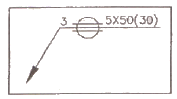
- 심 용접부의 폭은 3㎜ 이다.
- 심 용접부의 길이는 50㎜ 이다.
- 심 용접부의 거리는 30㎜ 이다.
- 심 용접부의 두께는 5㎜ 이다.
(정답률: 71%)
19. 도면 크기의 종류 중 호칭방법과 치수(A × B)가 맞지 않는 것은? (단, 단위는 mm 이다.)
- A0 = 841 × 1189
- A1 = 594 × 841
- A3 = 297 × 420
- A4 = 220 × 297
(정답률: 80%)
20. 다음과 같은 용접 기본기호의 명칭으로 맞는 것은?
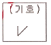
- 개선 각이 급격한 V형 맞대기 용접
- 가장자리 용접
- 필릿 용접
- 일면 개선형 맞대기 용접
(정답률: 73%)
2과목: 용접구조설계
21. 맞대기 용접시에 사용되는 엔드탭(end tab)에 대한 설명으로 틀린 것은?
- 용접 시작부와 끝부분에 가접한 후 용접한다.
- 용접 시작부와 끝부분에 결함을 방지한다.
- 모재와 다른 재질을 사용해야 한다.
- 모재와 같은 두께와 홈을 만들어 사용한다.
(정답률: 82%)
22. 인장강도 P, 사용응력 σ ,허용응력 σa라 할때, 안전율 공식으로 옳은 것은?
- 안전율 = P/(σ∙σa)
- 안전율 =P/σa
- 안전율 = P/(2∙σ)
- 안전율 =P/σ
(정답률: 67%)
23. 한쪽 모재 구멍을 이용하여 구멍안쪽과 다른 모재의 표면을 용접하는 것은?
- 플러그 용접
- 마찰 용접
- 플랜지 용접
- 플레어 용접
(정답률: 86%)
24. 필릿 용접이음의 파면시험은 시험편을 파단시킨 후 용접부를 검사하는 방법이다. 다음 중 파면 시험으로 검사할 수 없는 것은?
- 용입불량
- 슬래그잠입
- 라미네이션 균열
- 기공
(정답률: 79%)
25. 용접봉에 용착효율은 용접봉의 소요량을 산출하거나 용접 작업시간을 판단하는데 필요하다. 용착효율(%)을 나타내는 식으로 맞는 것은?
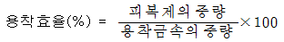
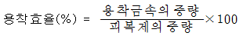
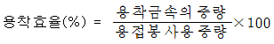
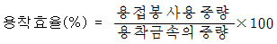
(정답률: 63%)
26. 용접부 시험법 중 파괴시험법에 해당되는 것은?
- 와류 시험
- 현미경 조직 시험
- X선 투과 시험
- 형광 침투 험
(정답률: 65%)
27. 용접입열이 일정한 경우 열전도율(λ)이 큰 것일수록 냉각속도가 크다. 다음 금속 중 냉각속도가 가장 빠른 것은?
- 연강
- 스테인리스강
- 알루미늄
- 동(銅)
(정답률: 67%)
28. 용접구조물에서 파괴 및 손상의 원인으로 가장 거리가 먼 것은?
- 재료 불량
- 사용 불량
- 설계 불량
- 시공 불량
(정답률: 73%)
29. 다음 그림과 같은 맞대기 용접 이음에서 강판의 두께를 10㎜로 하고 최대 2500N의 인장하중을 작용시킬 때 필요한 용접 길이는? (단, 용접부의 허용인장응력은 10N/mm2이다.)
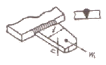
- 25㎜
- 23㎜
- 20㎜
- 18㎜
(정답률: 81%)
30. 용착금속 중의 수소량과 산소량이 가장 적은 용접봉은?
- 라임티타니아계
- 고셀룰로오스계
- 일루미나이트계
- 저수소계
(정답률: 88%)
31. 용접용어 중 아크 용접의 비드 끝에서 오목하게 파진 곳이라고 정의하는 것은?
- 스패터(Spatter)
- 크레이터(Crater)
- 피트(Pit)
- 오버랩(Overlap)
(정답률: 89%)
32. 용접이음 설계 시 일반적인 주의사항으로 틀린 것은?
- 가급적 능률이 좋은 아래보기 용접을 많이 할수 있도록 할 것
- 가급적 용접선을 교차시키도록 할 것
- 용접작업에 지장을 주지 않도록 충분한 공간을 갖도록 할 것
- 용접 이음을 1개소로 집중시키거나 너무 접근 시키지 않을 것
(정답률: 88%)
33. 용접부에 인장, 압축의 반복하중 30 ton이 작용하는 폭 600㎜인 두 장의 강판을 I형 맞대기 용접 하였을 때, 두 강판의 두께가 약 몇 ㎜ 이면 견딜 수 있는가? (단, 허용응력 σa= 6.3 kg/mm2로 한다.)
- 1㎜
- 2㎜
- 6㎜
- 8㎜
(정답률: 40%)
34. 가접 시 주의해야 할 사항으로 옳은 것은?
- 본 용접자(者)보다 용접 기량이 낮은 용접자가 가접을 시행한다.
- 가접 위치는 부품의 끝 모서리나 각 등과 같이 응력이 집중되는 곳에 가접한다.
- 가접 간격은 일반적으로 판 두께의 150~300배 정도로 하는 것이 좋다.
- 용접봉은 본 용접 작업 시에 사용하는 것보다 가는 것을 사용한다.
(정답률: 75%)
35. 레이저 용접의 특징 설명으로 틀린 것은?
- 좁고 깊은 용접부를 얻을 수 있다.
- 대입열 용접이 가능하고, 열영향부의 범위가 넓다.
- 고속 용접과 용접 공정의 융통성을 부여할 수 있다.
- 접합되어야 할 부품의 조건에 따라서 한 방향의 용접으로 접합이 가능하다.
(정답률: 75%)
36. 용접변형 방지법 중 냉각법에 속하지 않는 것은?
- 살수법
- 수냉동판 사용법
- 비석법
- 석면포 사용법
(정답률: 82%)
37. 용접 후 잔류응력 제거를 목적으로 일반적으로 판 두께가 25㎜인 용접 구조용 압연강재 또는 탄소강의 경우 노 내 풀림 시 온도로 가장 적당한 것은?
- 325 ± 25℃
- 425 ± 25℃
- 625 ± 25℃
- 825 ± 25℃
(정답률: 71%)
38. 구조용 강재 용접부의 피로강도에 영향을 주는 인자로 가장 거리가 먼 것은?
- 이음 형상
- 용접결함의 존재
- 용접구조상의 응력집중
- 용접선 길이
(정답률: 76%)
39. 용접부의 잔류응력을 제거하는 방법에 해당되지 않는 것은?
- 노 내 풀림법
- 국부 풀림법
- 피닝법
- 코킹법
(정답률: 88%)
40. 용접시공에서 예열을 하는 목적을 잘못 설명한 것은?
- 용접부와 인접한 모재의 수축응력을 감소하고균열을 방지하기 위하여 예열을 한다.
- 냉각속도를 지연시켜 열영향부와 용착금속의 경화를 방지하기 위하여 예열을 한다.
- 냉각속도를 지연시켜 용접금속 내에 수소성분을 배출함으로서 비드 및 균열(under bead crack)을 방지한다.
- 탄소성분이 높을수록 임계점에서의 냉각속도가 느리므로 예열을 할 필요가 없다.
(정답률: 82%)
3과목: 용접일반 및 안전관리
41. 다음 중 필릿 용접을 나타낸 그림은?
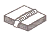
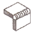
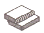
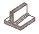
(정답률: 83%)
42. TIG 용접에 관한 사항 중 올바른 것은?
- 직류는 TIG 용접기에 사용할 수 없다.
- 직류 역극성은 직류 정극성에 비해 비드 폭이 좁다.
- 두꺼운 모재일수록 직류 정극성으로 한다.
- 교류는 TIG 용접기에 사용할 수 없다.
(정답률: 61%)
43. 용접기는 아크의 안정을 위하여 아크 용접전원의 외부 특성 곡선이 필요하다. 관련이 없는 것은?
- 수하 특성
- 정전압 특성
- 상승 특성
- 과부하 특성
(정답률: 75%)
44. 가스용접 작업 시 전진법과 후진법의 비교 중 전진법의 특징이 아닌 것은?
- 열 이용률이 양호하다.
- 용접속도가 느리다.
- 용접변형이 크다.
- 용접가능한 판 두께가 5㎜ 정도로 얇다.
(정답률: 46%)
45. 초음파 용접의 특징 설명 중 옳지 않은 것은?
- 냉간압접에 비하여 주어지는 압력이 작으므로 용접물의 변형이 적다.
- 용접 입열이 적고 용접부가 좁으며 용입이 깊어 이종 금속의 용접이 불가능 하다.
- 용접물의 표면처리가 간단하고 압연한 그대로의 재료도 용접이 가능하다.
- 얇은 판이나 필름(film)의 용접도 가능하다.
(정답률: 80%)
46. 심(seam)용접에서 용접법의 종류가 아닌 것은?
- 플래시 심 용접(flash seam welding)
- 맞대기 심 용접(butt seam welding)
- 매시 심 용접(mash seam welding)
- 포일 심 용접(foil seam welding)
(정답률: 40%)
47. 피복 아크 용접에서 정극성과 역극성의 설명으로 옳은 것은?(오류 신고가 접수된 문제입니다. 반드시 정답과 해설을 확인하시기 바랍니다.)
- 용접봉을 (-)극에, 모재에 (+)극을 연결하면 정극성이라 한다.
- 정극성일 때 용접봉의 용융속도는 빠르고 모재의 용입은 얕아진다.
- 역극성일 때 용접봉의 용융속도는 빠르고 모재의 용입은 깊어진다.
- 박판의 용접은 주로 정극성을 이용한다.
(정답률: 71%)
48. MIG 용접의 특징에 대한 설명으로 틀린 것은?
- 반자동 또는 전자동 용접기로 용접속도가 빠르다.
- 정전압 특성 직류용접기가 사용된다.
- 상승특성의 직류용접기가 사용된다.
- 아크 자기 제어 특성이 없다.
(정답률: 76%)
49. 표피효과(skin effect)와 근접효과(proximity effect)를 이용하여 용접부를 가열 용접하는 방법은?
- 초음파 용접(ultrasonic welding)
- 마찰 용접(friction pressure welding)
- 폭발 압접(explosive welding)
- 고주파 용접(high-frequency welding)
(정답률: 50%)
50. 가스절단 방법의 종류에 해당되지 않는 것은?
- 가스 시공
- 보통가스 절단
- 분말 절단
- 플라스마 제트 절단
(정답률: 45%)
51. TIG 용접 중 직류정극성을 사용하여 용접했을때 용접효율을 가장 많이 올릴 수 있는 재료는?
- 스테인리스강
- 알루미늄합금
- 마그네슘합금
- 알루미늄주물
(정답률: 80%)
52. 40kVA의 교류아크 용접기의 전원전압이 200V일 때 전원스위치에 넣을 퓨즈의 용량은 몇 A 인가?
- 50
- 100
- 150
- 200
(정답률: 53%)
53. 연강용 피복 아크 용접봉의 종류와 피복제의 계통이 서로 맞게 연결된 것은?
- E4301 : 일미나이트계
- E4303 : 저수소계
- E4311 : 라임티타니아계
- E4313 : 고셀룰로오스계
(정답률: 78%)
54. 정격출력전류가 180A인 교류 아크 용접기의 최고 무부하전압으로 맞는 것은?
- 30V 이하
- 50V 이하
- 80V 이하
- 100V 이하
(정답률: 46%)
55. 가스절단면에서 절단면에 생기는 드래그라인 (drag line)에 관한 설명으로 틀린 것은?
- 절단속도가 일정할 때 산소 소비량이 적으면 드래그 길이가 길고 절단면이 좋지 않다.
- 가스 절단의 양부를 판정하는 기준이 된다.
- 절단속도가 일정할 때 산소 소비량을 증가시키면 드래그 길이는 길어진다.
- 드래그 길이는 주로 절단속도, 산소 소비량에 따라 변화한다.
(정답률: 71%)
56. 용접 중 아크 빛으로 인하여 눈이 혈안이 되고 붓는 수가 있는데 이때 우선 취해야 할 조치로 가장 적절한 것은?
- 밖에 나가 먼 산을 바라본다.
- 눈에 소금물을 넣는다.
- 안약을 넣고 계속 작업한다.
- 냉습포를 눈 위에 얹고 안정을 취한다.
(정답률: 95%)
57. MIG용접 시 직류 역극성에 의한 용적 이행은?
- 핀치 이행
- 스프레이 이행
- 입적 이행
- 단락 이행
(정답률: 50%)
58. 교류아크 용접 시 아크시간이 6분이고 휴식시간이 4분일 때 사용율은 얼마인가?
- 40%
- 50%
- 60%
- 70%
(정답률: 85%)
59. 피복아크 용접에서 전류가 인체에 미치는 영향 중 고통을 느끼고 강한 근육 수축이 일어나며 호흡이 곤란한 경우의 감전전류 값은 몇 mA 정도 인가?
- 1~5
- 20~50
- 100~150
- 200~300
(정답률: 79%)
60. 피복 아크 용접봉에서 아크를 안정시키는 피복제의 성분은?
- 산회티탄
- 페로망간
- 마그네슘
- 알루미늄
(정답률: 46%)